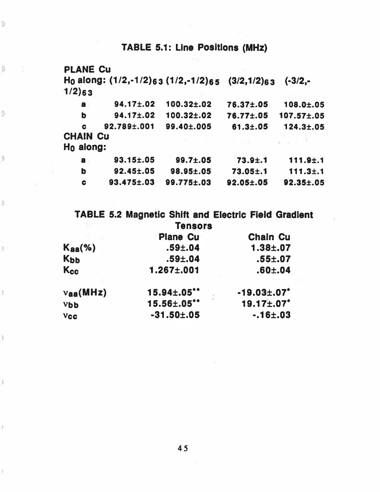
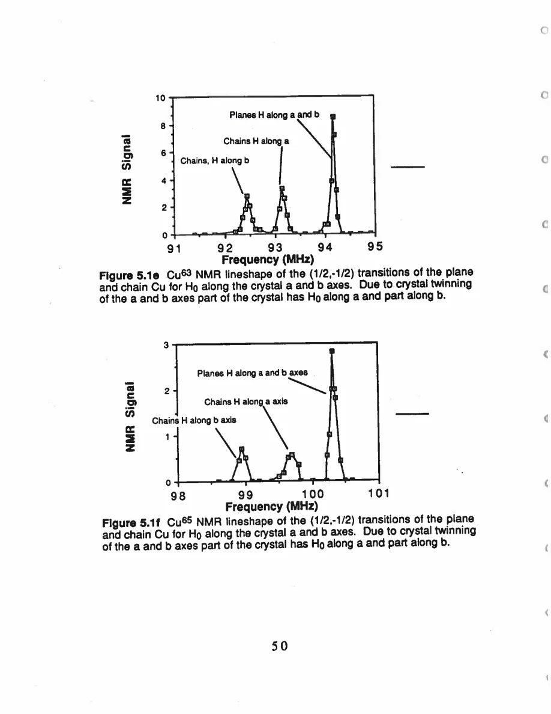
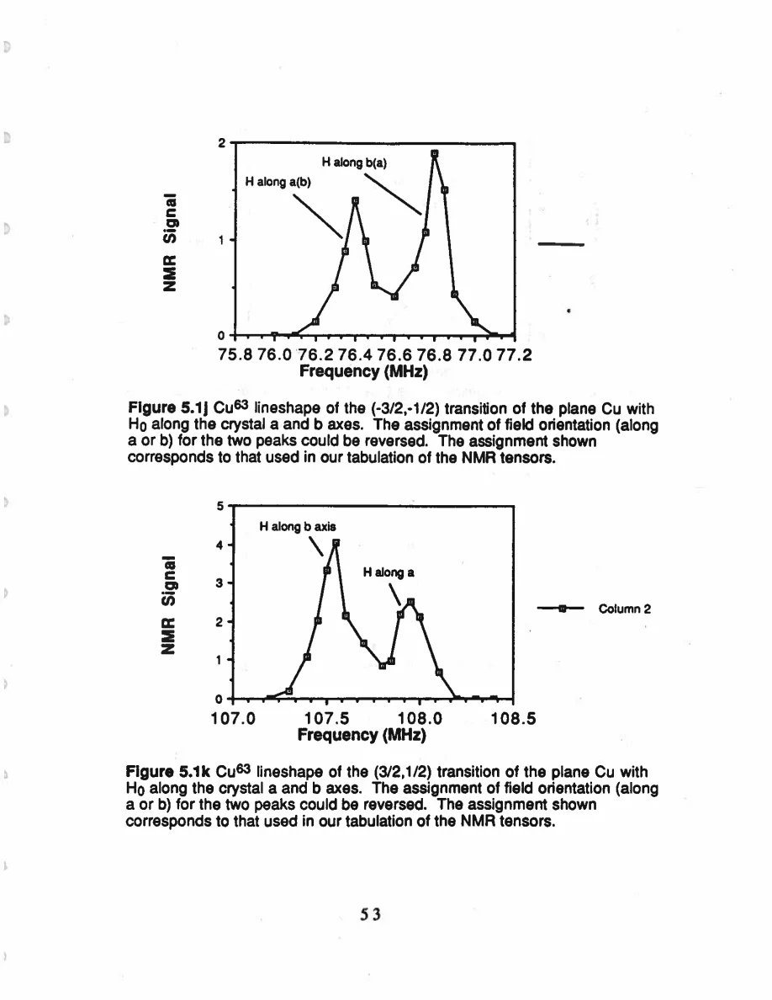

Pennington · supplied source 1989 · chapter unit
4. From many transitions to plane and chain assignment
The assignment follows tensor symmetry and an NMR Hamiltonian, not just the zero-field frequency.
The question: How does the experiment identify 31.5 MHz as plane Cu?
Before you start: the terms you need
- Plane Cu / chain Cu: the two crystallographic copper sites in YBCO
- EFG: electric field gradient, which couples to a nuclear quadrupole moment
- Magnetic shift: the field-proportional frequency change after quadrupole contributions are separated
- W₁: the thesis’s elementary satellite population-transition rate, not automatically 1/T₁
- Redfield contribution: echo decay generated by the fluctuating fields also responsible for population recovery
- Transferred hyperfine coupling: a nuclear spin senses electronic spins through orbital mixing or intervening atoms
See → explain → check
Follow the idea in 3 pictures.
Picture 1 / 3
Count transitions
Look for: Separate nuclear transitions from electronic phases.
Swipe across the picture to read every label, or enlarge it below.
- 2 Cu sites
- 3 field directions
- 3 transitions each
Count of measured line families, not 18 distinct electronic species.
Two Cu sites × three directions × three⁶³Cu transitions gives 18 lineshapes.
Check the original: PDF p. 47
Picture 2 / 3
Fit two tensors
Look for: Track the two contributions to each frequency.
Swipe across the picture to read every label, or enlarge it below.
- Magnetic term
- Quadrupole term
Conceptual Hamiltonian decomposition.
The NMR line is set by Zeeman/shift and quadrupole terms.
Check the original: PDF p. 49 · PDF p. 116 · PDF p. 118
Picture 3 / 3
Connect to NQR
Look for: Use the assigned EFG to predict zero-field frequencies.
Swipe across the picture to read every label, or enlarge it below.
- Tensor symmetry
- Site identification
- NQR frequency
Source assignment; the frequency alone cannot supply the crystal axis.
The 31.5 MHz line is the plane family and 22 MHz is the chain family.
Check the original: PDF p. 50
Explain it back.
Try answering aloud before opening the explanation.
Why is a powder NQR frequency insufficient for this assignment?
It does not determine which crystal direction is special in the fitted tensor.
Why is the central frequency not always γH₀(1+K)?
A second-order quadrupole correction can remain when the transverse EFG components differ.
Go deeper Follow the full argument
The measured set is deliberately redundant
A spin 3/2 nucleus has a central transition between m=±1/2 and two satellite transitions involving m=±3/2. For each Cu site, the thesis measures the three⁶³Cu transitions for each of three crystal directions:18 lineshapes in total. Additional⁶⁵Cu central transitions supply comparisons. The narrow plane-Cu central line for H₀∥c can be excited across its approximately 25 kHz width and Fourier-transformed from the echo. Broader lines are measured point by point with tuned pulses. The underlying data are therefore collected differently according to bandwidth. One should compare positions and widths with awareness of excitation and echo timing, not assume every spectrum is a single identical digital acquisition.
Fit the Hamiltonian before naming a shift
The measured frequencies constrain the EFG and magnetic-shift tensors simultaneously. The thesis starts near the result of perturbation theory and diagonalizes the Cu Hamiltonian, adjusting tensor values to reproduce the observed transitions. The appendix supplies an exact diagonalization for field along a principal axis. This is useful because the satellite quadrupole splitting is substantial; the central transition also receives a second-order contribution when the relevant transverse EFG components differ. The reported plane shift has Kaa≈Kbb≈0.59% and Kcc≈1.267%; the chain shift has Kaa≈1.38% and Kbb,Kcc≈0.55–0.60%. These contrasts concern magnetic shifts after the electric contribution has been separated. They are not simply comparisons of raw central frequencies.
PDF p. 49 · PDF p. 57 · PDF p. 116 · PDF p. 117 · PDF p. 118
Symmetry identifies the families
Plane Cu’s approximate local symmetry about c matches the c-special shift and EFG family. Chain Cu’s shift is approximately symmetric about a, matching its local coordination. The chain EFG is strongly nonaxial, and the author treats that feature separately rather than asserting that every chain tensor is axial. With the site families assigned, the fitted EFG predicts zero-field NQR frequencies:31.5 MHz for planes and 22.0 MHz for chains. Because an EFG is traceless, the NQR expression gives the same frequency under permutation of principal labels. A zero-field frequency therefore lacks the orientation information that made the single-crystal assignment powerful. Twinned a/b domains account for the multiple in-plane peaks; some plane satellite a/b labels can be reversed without changing the robust site inference. A tin signal from solder is identified in a high-frequency spectrum and must not be mistaken for an additional Cu site. The source assignment is supported by the full transition family, not by selecting one convenient peak.
PDF p. 49 · PDF p. 50 · PDF p. 57 · PDF p. 62 · PDF p. 63 · PDF p. 64 · PDF p. 65 · PDF p. 66
Translate the mathematics Essential equations and their meaning
ν_NQR² = Vcc² + (Vaa − Vbb)²/3
Symbols: Vaa,Vbb,Vcc: EFG parameters expressed in the thesis’s frequency units; Vaa+Vbb+Vcc=0
Connects a fitted NMR EFG tensor to the zero-field NQR frequency; frequency alone does not provide the site’s crystal orientation.
Read the evidence Guided original source pages

PDF p. 57

PDF p. 62

PDF p. 65
What the evidence supports—and where it stops
- The table and valence chapter use opposite overall EFG sign conventions; NQR magnitude and axial/nonaxial distinctions do not depend on that overall sign.
- Some a/b satellite labels remain interchangeable in this twinned sample.
Source version, reading coverage and preservation
All 146 scanned pages rendered and locally OCR-recognized with Windows.Media.Ocr. Research prose of PDF 13–139 read in full; source-specific formulas and selected complete page figures inspected individually. PDFpage=printedpage+12.
Reviewed body pages: 13, 14, 15, 16, 17, 18, 19, 20, 21, 22, 23, 24, 25, 26, 27, 28, 29, 30, 31, 32, 33, 34, 35, 36, 37, 38, 39, 40, 41, 42, 43, 44, 45, 46, 47, 48, 49, 50, 51, 52, 53, 54, 55, 56, 57, 58, 59, 60, 61, 62, 63, 64, 65, 66, 67, 68, 69, 70, 71, 72, 73, 74, 75, 76, 77, 78, 79, 80, 81, 82, 83, 84, 85, 86, 87, 88, 89, 90, 91, 92, 93, 94, 95, 96, 97, 98, 99, 100, 101, 102, 103, 104, 105, 106, 107, 108, 109, 110, 111, 112, 113, 114, 115, 116, 117, 118, 119, 120, 121, 122, 123, 124, 125, 126, 127, 128, 129, 130, 131, 132, 133, 134, 135, 136, 137, 138, 139. Acknowledgments and biography are not teaching material. Bibliography not independently verified against external publications. Mathematical derivations are summarized at final-result level; not every algebraic line independently reconstructed.
Source SHA-256: 85b6d3c8d20ccc23476bf72473860248d5228e16892afefa8dec6c7054d43c26. Original file bytes preserved locally, and in this room’s original download.
Thesis - Pennington - 1989 - Single crystal NMR of high temperature superconductors.pdf